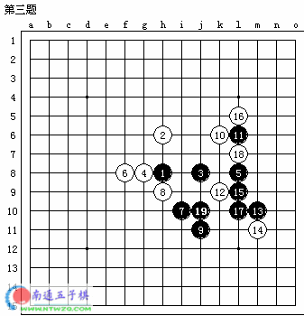

二手四三胜【3，4题】
#1 二手四三胜【3，4题】 作者：有志青年 发表时间：2006-1-9 12:48:55
第三题#2 Re:二手四三胜【3，4题】 作者：有志青年 发表时间：2006-1-9 12:50:06
第四题#3 Re:二手四三胜【3，4题】 作者：幽若 发表时间：2006-1-10 10:16:03
3题是J9\K8,4题是G7\H7#4 Re:二手四三胜【3，4题】 作者：chlx0418 发表时间：2006-2-6 16:18:36
第三条明显J9 K8不行嘛 J9之后人家J7就可以了,应该是L9K8
#5 Re:二手四三胜【3，4题】 作者：chlx0418 发表时间：2006-2-6 16:22:51
第四条也是啊,G7人家D10 H7人家H10就反了
应该是E8/E6吧....
#6 第三题 作者：有志青年 发表时间：2006-2-6 16:23:19

这样做行吗
#7 Re:二手四三胜【3，4题】 作者：chlx0418 发表时间：2006-2-6 16:25:39
这是禁手吧.....还是应该在K8#8 Re:二手四三胜【3，4题】 作者：chlx0418 发表时间：2006-2-6 16:27:17
...看错了...哎我太弱了
#9 Re:二手四三胜【3，4题】 作者：有志青年 发表时间：2006-2-6 16:29:43
共同进步#10 Re:二手四三胜【3，4题】 作者：chlx0418 发表时间：2006-2-6 16:32:50
其实我不怎么懂的,我只是在QQ游戏上玩玩无禁手的,你放的第21条我怎么也看不懂为什么黑棋不43....请问那是禁手吗?
就是黑棋第17手为什么不下I8
#11 Re:二手四三胜【3，4题】 作者：幽若 发表时间：2006-2-6 16:37:50
 俺错了,嘿嘿,多谢指正哈
俺错了,嘿嘿,多谢指正哈
#12 Re:二手四三胜【3，4题】 作者：有志青年 发表时间：2006-2-6 16:39:29
题目中原来的顺序并不是实际下棋的顺序，如果做板田的三手胜也会遇到这个疑惑#13 Re:二手四三胜【3，4题】 作者：chlx0418 发表时间：2006-2-6 16:41:14
哦...呵呵这个站是你们建的吗?#14 Re:二手四三胜【3，4题】 作者：有志青年 发表时间：2006-2-6 18:45:13
嗯，是我们第一次聚会后共同商讨的成果。
欢迎您常来
#15 Re:二手四三胜【3，4题】 作者：江南新绿 发表时间：2006-2-6 19:09:01
6楼第三题错了吧。多了一个棋子
#16 Re:二手四三胜【3，4题】 作者：江南新绿 发表时间：2006-2-6 19:12:14
#17 Re:二手四三胜【3，4题】 作者：有志青年 发表时间：2006-2-6 19:18:00
惭愧 ，
，
楼上正解，两手四三胜和三手胜概念上还是有区别的。
#18 Re:二手四三胜【3，4题】 作者：august 发表时间：2006-10-29 20:35:55
第三题不是二手吧？？#19 Re:二手四三胜【3，4题】 作者：格林鲍尔 发表时间：2006-11-4 23:08:38
黑棋第17手当然不能下I8了，应该是K8。#20 Re:二手四三胜【3，4题】 作者：天线宝宝 发表时间：2006-11-14 16:16:07
4题可以i8h7吗